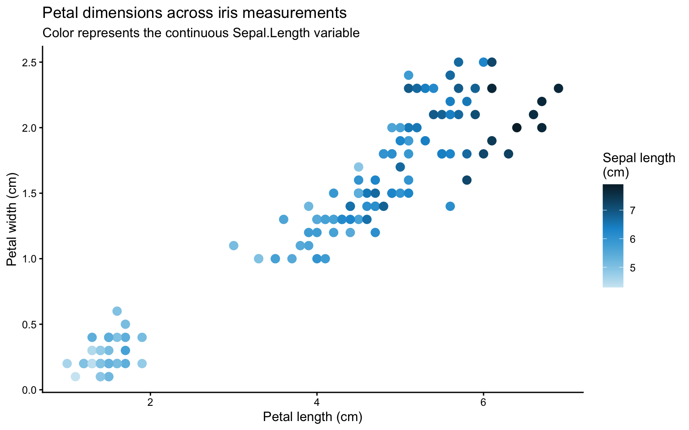
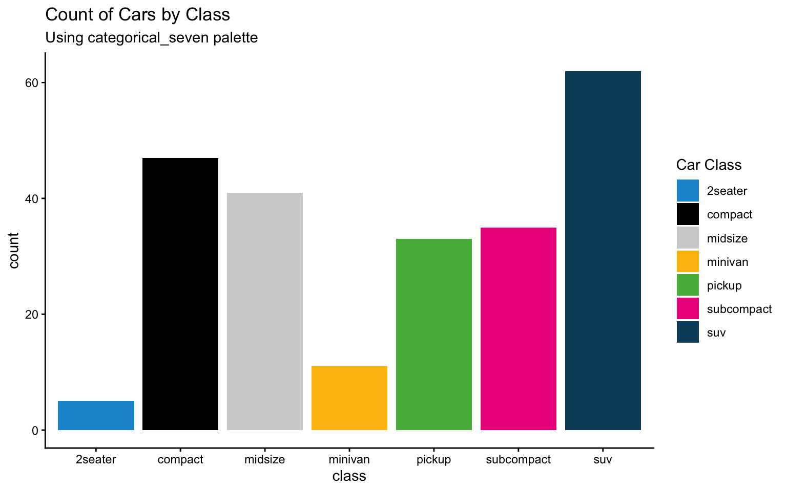
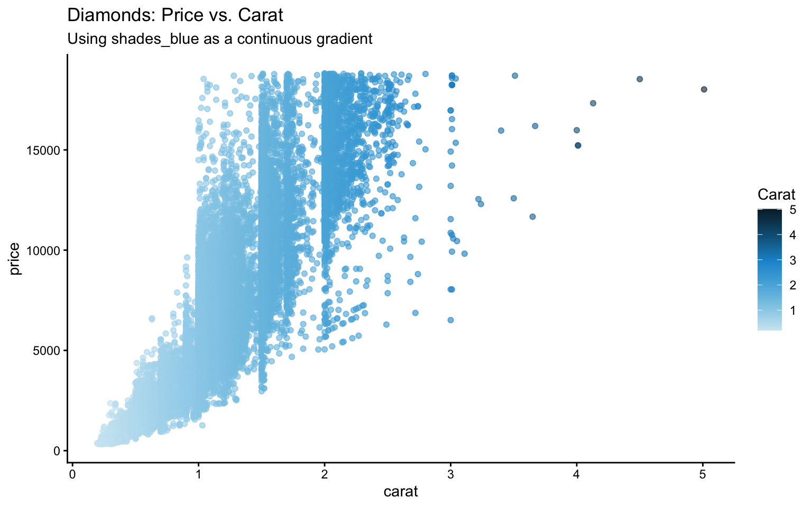
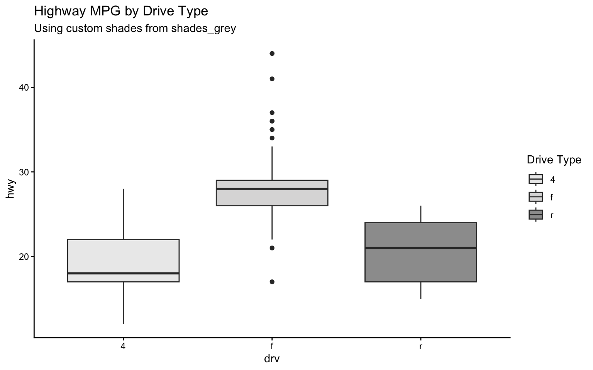
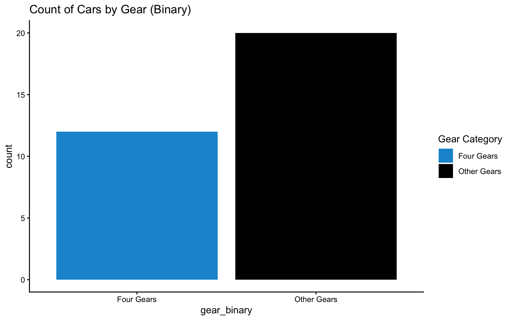
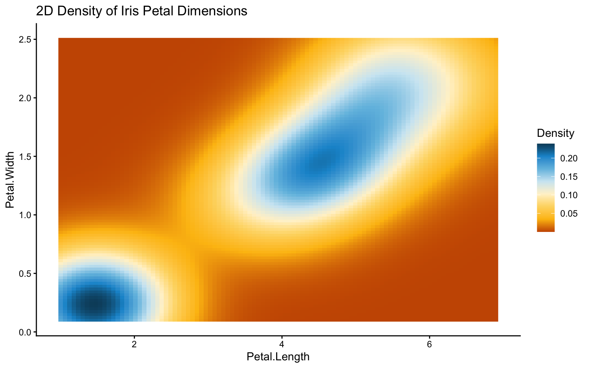
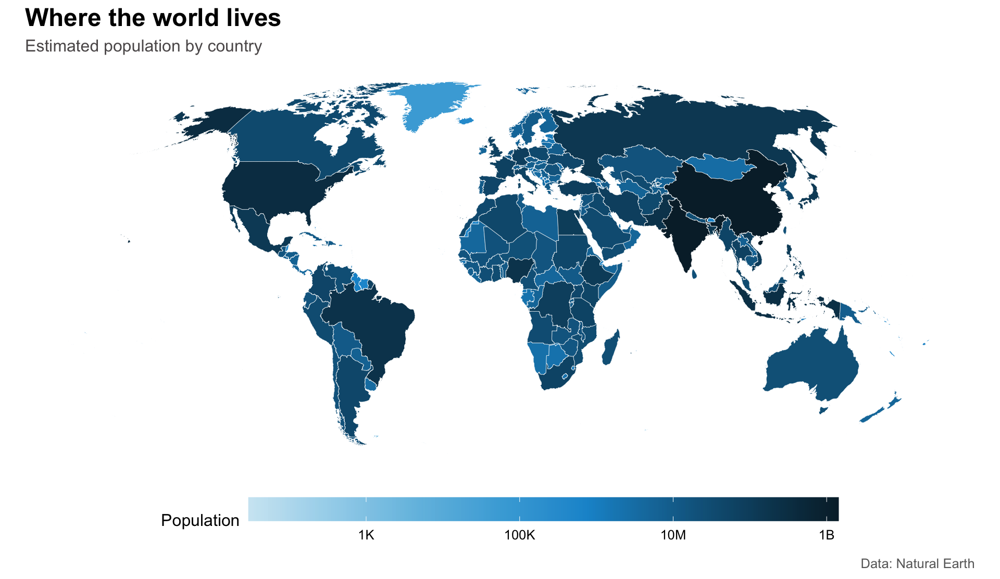
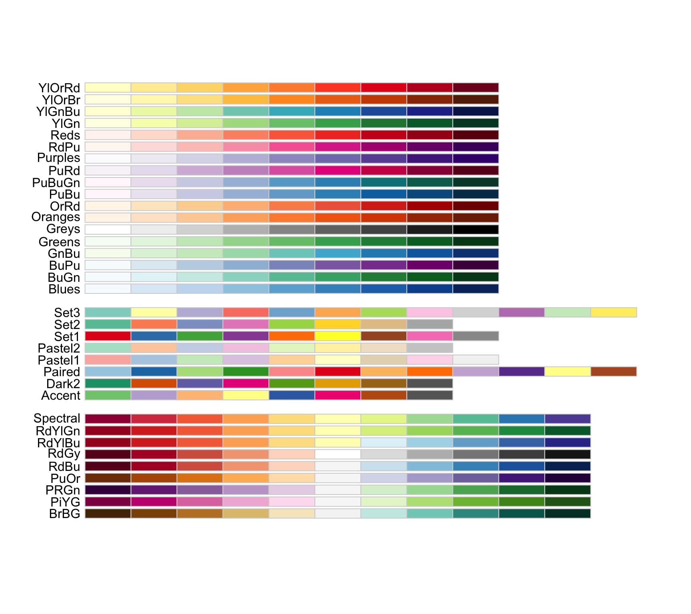

When designing visualizations, choosing the right colors can greatly enhance readability, convey the correct message, and make your plots aesthetically pleasing. Here are some guidelines along with code examples to help you choose color palettes effectively.
Start with a set of main colors to create a consistent look across your visualizations.
main_colors <- c("#1696d2", "#d2d2d2", "#000000", "#fdbf11", "#ec008b", "#55b748", "#5c5859", "#db2b27")Here is what that palette actually looks like:
Shades of a main color can be used for gradients or to show hierarchy. For example:
shades_blue <- c("#cfe8f3", "#a2d4ec", "#73bfe2", "#46abdb", "#1696d2", "#12719e", "#0a4c6a", "#062635")
shades_grey <- c("#f5f5f5", "#ececec", "#e3e3e3", "#dcdbdb", "#d2d2d2", "#9d9d9d", "#696969", "#353535")Blue sequence
Grey sequence
These can be especially useful for continuous scales or when you need subtle color transitions.
Depending on the number of groups in your data, choose or create a palette that provides enough distinction:
one_group <- c("#1696d2", "#000000") categorical_two <- c("#1696d2", "#000000", "#d2d2d2", "#fdbf11")
political_two <- c("#1696d2", "#db2b27")
sequential_two <- c("#a2d4ec", "#1696d2") categorical_three <- c("#1696d2", "#000000", "#d2d2d2", "#fdbf11", "#55b748", "#ec008b")
sequential_three <- c("#a2d4ec", "#1696d2", "#0a4c6a") categorical_four <- c("#1696d2", "#000000", "#d2d2d2", "#fdbf11", "#ec008b")
sequential_four <- c("#cfe8f3", "#73bfe2", "#1696d2", "#0a4c6a")
categorical_five <- c("#1696d2", "#000000", "#d2d2d2", "#fdbf11", "#ec008b", "#0a4c6a", "#55b748")
sequential_five <- c("#cfe8f3", "#73bfe2", "#1696d2", "#0a4c6a", "#000000")
categorical_six <- c("#1696d2", "#000000", "#d2d2d2", "#fdbf11", "#55b748", "#ec008b", "#0a4c6a")
sequential_six <- c("#cfe8f3", "#a2d4ec", "#73bfe2", "#46abdb", "#1696d2", "#12719e")
categorical_seven <- c("#1696d2", "#000000", "#d2d2d2", "#fdbf11", "#55b748", "#ec008b", "#0a4c6a")
sequential_seven <- c("#cfe8f3", "#a2d4ec", "#73bfe2", "#46abdb", "#1696d2", "#12719e", "#0a4c6a")When you need to highlight how values diverge from a central point, a diverging palette is ideal.
diverging_colors <- c("#ca5800", "#fdbf11", "#fdd870", "#fff2cf", "#cfe8f3", "#73bfe2", "#1696d2", "#0a4c6a")library(tidyverse)
ggplot(iris, aes(
x = Petal.Length,
y = Petal.Width,
color = Sepal.Length
)) +
geom_point(size = 3) +
scale_color_gradientn(colors = shades_blue) +
theme_classic() +
labs(
title = "Petal dimensions across iris measurements",
subtitle = "Color represents the continuous Sepal.Length variable",
x = "Petal length (cm)",
y = "Petal width (cm)",
color = "Sepal length\n(cm)"
)
ggplot(mpg, aes(x = class, fill = class)) +
geom_bar() +
scale_fill_manual(values = categorical_seven) +
theme_classic() +
labs(title = "Count of Cars by Class",
subtitle = "Using categorical_seven palette",
fill = "Car Class")
ggplot(diamonds, aes(x = carat, y = price, color = carat)) +
geom_point(alpha = 0.6) +
scale_color_gradientn(colors = shades_blue) +
theme_classic() +
labs(title = "Diamonds: Price vs. Carat",
subtitle = "Using shades_blue as a continuous gradient",
color = "Carat")
# Identify the unique drive types in mpg
drv_levels <- sort(unique(mpg$drv))
# Select three shades from shades_grey (for example, positions 2, 4, and 6)
selected_grey <- shades_grey[c(2, 4, 6)]
ggplot(mpg, aes(x = drv, y = hwy, fill = drv)) +
geom_boxplot() +
scale_fill_manual(values = selected_grey) +
theme_classic() +
labs(title = "Highway MPG by Drive Type",
subtitle = "Using custom shades from shades_grey",
fill = "Drive Type")
mtcars2 <- mtcars %>%
mutate(gear_binary = ifelse(gear == 4, "Four Gears", "Other Gears"))
ggplot(mtcars2, aes(x = gear_binary, fill = gear_binary)) +
geom_bar() +
scale_fill_manual(values = categorical_two) +
theme_classic() +
labs(title = "Count of Cars by Gear (Binary)",
fill = "Gear Category")
ggplot(iris, aes(x = Petal.Length, y = Petal.Width, fill = after_stat(density))) +
stat_density_2d(geom = "raster", contour = FALSE) +
scale_fill_gradientn(colors = diverging_colors) +
theme_classic() +
labs(title = "2D Density of Iris Petal Dimensions",
fill = "Density")
A map is a good test for a sequential palette because the reader should immediately understand that darker color means “more.” This example uses Natural Earth country boundaries, a logarithmic population scale, and a Robinson projection. The classic theme keeps the typography and legend clean while theme() removes the axes, which are usually unnecessary for a world map.
library(ggplot2)
library(sf)
library(rnaturalearth)
library(scales)
shades_blue <- c(
"#cfe8f3", "#a2d4ec", "#73bfe2", "#46abdb",
"#1696d2", "#12719e", "#0a4c6a", "#062635"
)
world <- ne_countries(scale = "medium", returnclass = "sf")
world <- world[world$admin != "Antarctica", ]
world$pop_est[world$pop_est <= 0] <- NA
ggplot(world) +
geom_sf(
aes(fill = pop_est),
color = "white",
linewidth = 0.12
) +
coord_sf(crs = "+proj=robin", datum = NA) +
scale_fill_gradientn(
colors = shades_blue,
trans = "log10",
labels = label_number(scale_cut = cut_short_scale()),
na.value = "#ececec",
name = "Population"
) +
labs(
title = "Where the world lives",
subtitle = "Estimated population by country",
caption = "Data: Natural Earth"
) +
theme_classic(base_size = 12) +
theme(
axis.line = element_blank(),
axis.text = element_blank(),
axis.ticks = element_blank(),
axis.title = element_blank(),
legend.position = "bottom",
legend.key.width = grid::unit(3, "cm"),
plot.title = element_text(face = "bold", size = 18),
plot.subtitle = element_text(color = "#5c5859"),
plot.caption = element_text(color = "#696969")
)
library(RColorBrewer)
display.brewer.all()